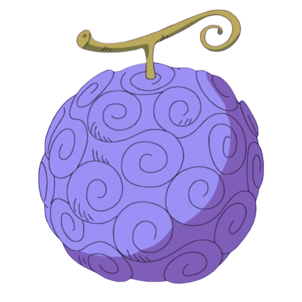
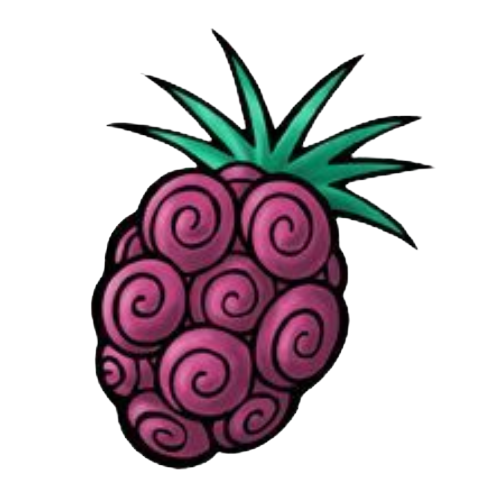
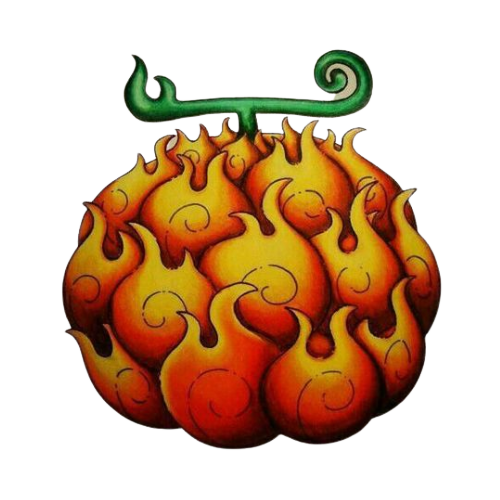
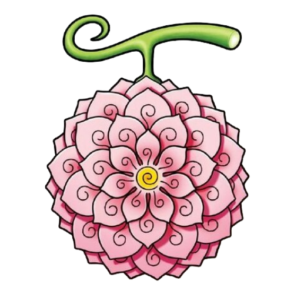
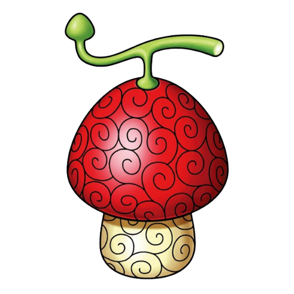
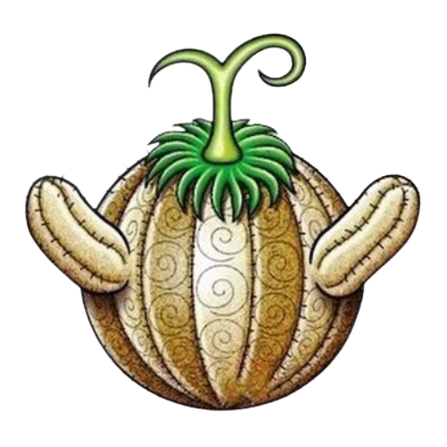
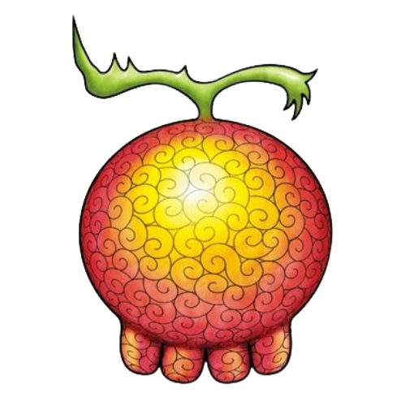
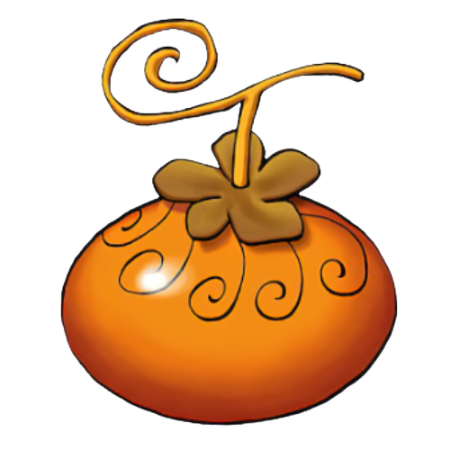
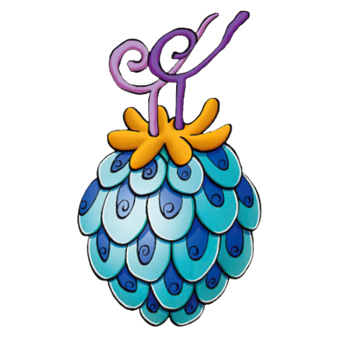

-
Gomu Gomu No Mi #001
- Zoan
- Mythical
Rumores dizem que esta fruta é feita do próprio Joyboy. Herdando seus poderes de borracha.
-
Bara Bara No Mi #002
- Paramecia
Tentaram cortar essa fruta para dividir entre 3 pessoas, mas misteriosamente, ela voltou a ficar inteira.
-
Mera Mera No Mi #003
- logia
Cuidado quando pegar essa fruta, ela pode aquecer o seu coração.
-
Hana Hana No Mi #004
- Paramecia
Gerar partes do seu corpo para te ajudar pode ser muito mais forte do que parece.
-
Hito Hito No Mi #005
- Zoan
- Common
Tem uma natureza bárbara. Na batalha, ele chicoteia sua cauda ardente e corta com garras afiadas.
-
Suna Suna No Mi #006
- Logia
Ele cospe fogo que é quente o suficiente para derreter pedregulhos. Pode causar incêndios florestais soprando chamas.
-
Yomi Yomi No Mi #007
- Paramecia
Quando ele retrai seu longo pescoço em sua concha, ele esguicha água com força vigorosa.
-
Tori Tori No Mi #008

- Zoan
- Mythical
É reconhecido como um símbolo de longevidade. Se sua concha tem algas, esse Wartortle é muito antigo.
-
Inu Inu No Mi #009
- Zoan
- Mythical >
Ele esmaga seu inimigo sob seu corpo pesado para causar desmaios. Em uma pitada, ele se retirará dentro de sua concha.
-
Uo Uo No Mi #010
- Zoan
- Mythical
Para proteção, ele libera um fedor horrível da antena em sua cabeça para afastar os inimigos.